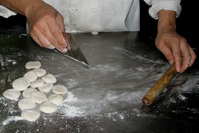
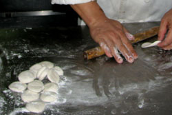
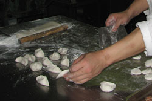

Adult Cooking Class for March: Chinese Cuisine
The class in March will be cooking several traditional Chinese dishes: Peking dumplings, wonton soup, fried rice, Chinese vegetables, and shrimp with lobster sauce. For dessert: banana spring rolls.

This looks easier than it is! Chef Carolyne is demonstrating the first steps in making Chinese dumplings, known as jiaozi (pronounced geeow dz). Notice that she is using a traditional wooden rolling pin to roll out the dough. These dumplings were stuffed with pork and then steamed, although other popular fillings are made with chicken and leeks or vegetables with spiced tofu and cellophane noodles. Dumplings can be steamed, boiled, or fried, and have unique names depending on the preparation method.